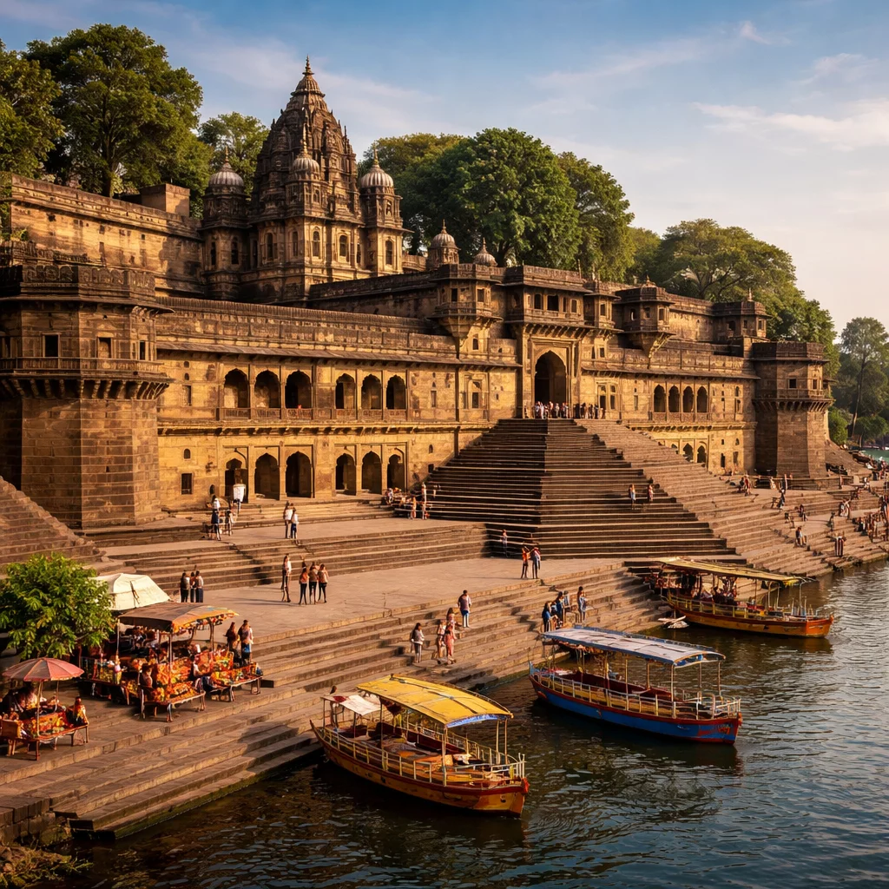
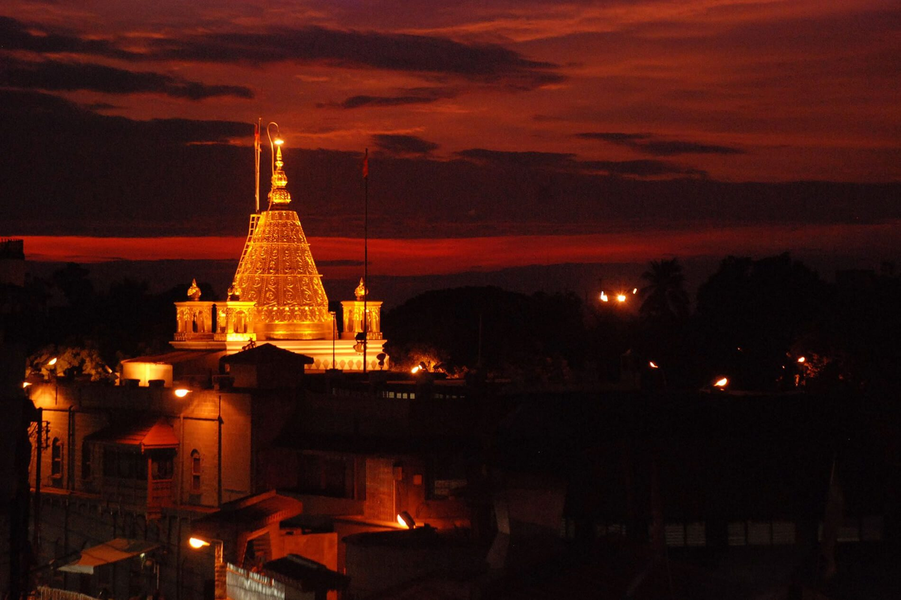
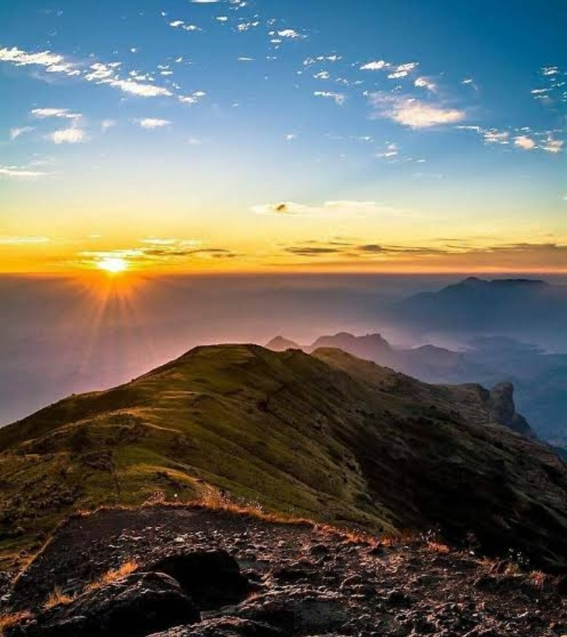
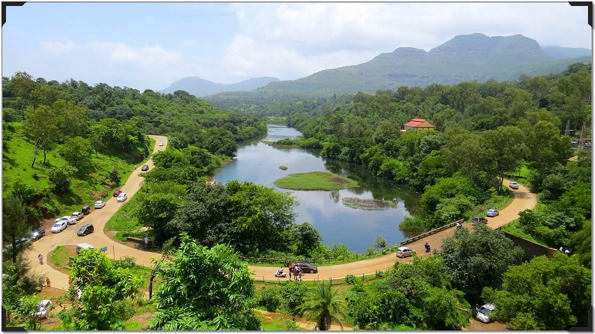
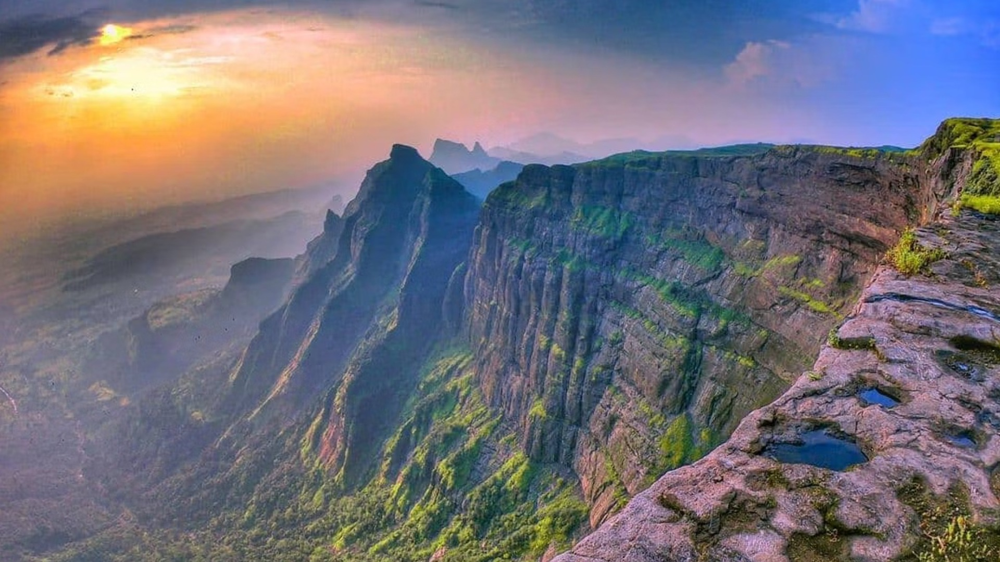
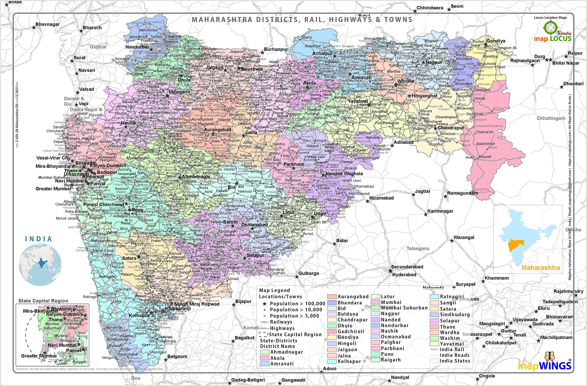

🏰 Ahilyanagar Fort
A historic masterpiece carrying centuries of stories.
Exploring Maharashtra's Heritage...
Ahilyanagar is a land where history, spirituality and nature come together. From magnificent forts to peaceful temples and breathtaking landscapes, every corner tells a story.
Years of History
Heritage Places
Hidden Gem

A historic masterpiece carrying centuries of stories.

A world famous spiritual destination.

The highest mountain peak of Maharashtra.

Beautiful lakes, waterfalls and Sahyadri landscapes.

Ancient fort famous for trekking and history.
Beginning of Maharashtra's rich civilization and culture.
Forts, warriors and unforgettable historical stories.
A beautiful blend of heritage and progress.
Discover Maharashtra's beauty from Sahyadri mountains to coastal landscapes.

A historic district known for forts, spiritual destinations and natural beauty.
Explore Places →Peaceful lakes, waterfalls and beautiful landscapes.
Historic fort with amazing trekking views.
Experience untouched nature and adventure.
Create your perfect Ahilyanagar travel experience.
October to February is ideal for exploring forts, temples and nature spots.
A 2-3 day trip is perfect to explore major attractions.
Trekking, photography, heritage walks and local food.
Visit Ahilyanagar Fort and historical locations.
Explore Shirdi and nearby spiritual attractions.
Enjoy Kalsubai, Bhandardara and nature trails.
Your personal digital guide to explore Ahilyanagar.
Hello! Ask me about places, food, history and travel.
Traditional Paithani saree, Kolhapuri chappals, warm hospitality, village fairs (Jatra), and devotional Kirtan are an important part of Maharashtra's culture.